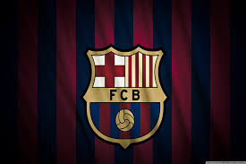
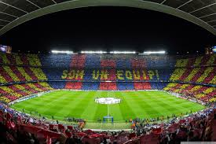
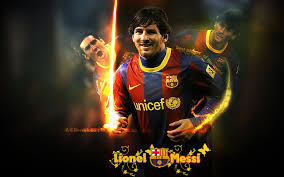

Born and raised in central Argentina, Messi was diagnosed with a growth hormone deficiency as a child. At age 13, he relocated to Spain to join Barcelona, who agreed to pay for his medical treatment. After a fast progression through Barcelona's youth academy, Messi made his competitive debut aged 17 in October 2004. Despite being injury-prone during his early career, he established himself as an integral player for the club within the next three years, finishing 2007 as a finalist for both the Ballon d'Or and FIFA World Player of the Year award, a feat he repeated the following year.



His first uninterrupted campaign came in the 2008–09 season, during which he helped Barcelona achieve the first treble in Spanish football. At 22 years old, Messi won the Ballon d'Or and FIFA World Player of the Year award by record voting margins.
Three successful seasons followed, with Messi winning three consecutive FIFA Ballon d'Ors, including an unprecedented fourth. His personal best campaign statistically to date was the 2011–12 season, in which he set the La Liga and European records for most goals scored in a single season, while establishing himself as Barcelona's all-time top scorer in official competitions in March 2012.
